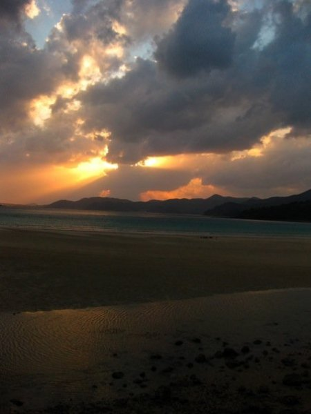
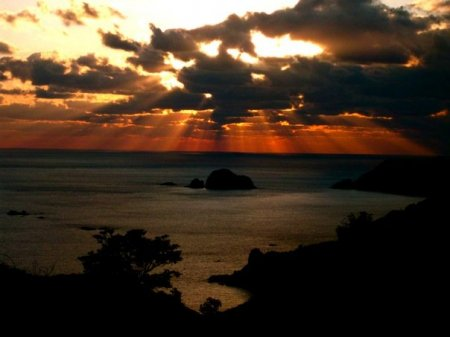
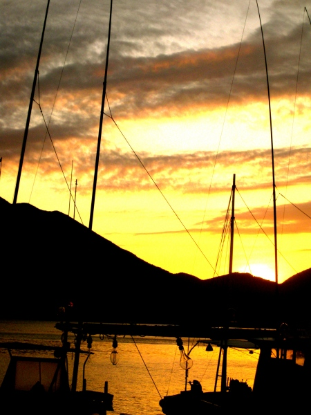
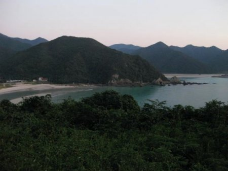

Pining for the Simple Things in Life? Go to Goto
If you’re low on cash and high off exhaust fumes from the city, consider coming to Goto Island for an affordable detox. Only 80 km off the coast of Nagasaki and abounding in natural beauty, this seemingly forgotten island is the perfect place to rent a car and road trip it for a weekend with friends.
{kind=link}
What to See and Do…
If you make it into Fukue on a Friday, you’ll find the sleepy downtown doesn’t offer much in terms of nightlife, which is great because you’ll want to get an early start. Catching a sunrise (or sunset) along the coastline is like watching the Japanese flag unfurl before your eyes. Takahama Beach in Miiraku, Osezaki Lighthouse in Tamanoura and Gyougasaki park in Kishiku are just a few great places to view the natural inspiration for the hinomaru. If you’re a reluctant riser however, consider renting a room with a view. Private cabins at San San Camping Village in Tomie town or Gyougasaki Park offer spacious and affordable accommodation as well as bbq facilities. The park is especially gorgeous at sunset when pink skies, juxtaposed with jutting grey cliffs and a blue expanse of ocean, unveil in colors you’ve only seen in a crayon box.
But the island isn’t just a feast for the eyes. It also boasts some significant sightseeing for history buffs and culture vultures alike. Once an enclave for exiled Christians, there are a handful of churches, built during the Edo period, for your architectural viewing pleasure as well as monuments to the venerable founder of Shingon Buddhism, Kobo Daishi, whose envoys set off for China from Goto.
{kind=link}
“Sounds brilliant, but where can I get some food?” you may ask. Head along Highway route 162 and you’ll hit the lush green foothills of Okura (Hirazo-cho). Here, you can feast on a locally grown brunch at Katashi, an organic foods, crafts and alternative health co-op where 600 yen gets you a set meal that patrons all eat together along a narrow table (Saturdays and weekday reservation only). Afterwards treat yourself to an in-house shiatsu massage by Yuko. For only 3500 yen you get an hour and a half of unparalleled muscular bliss.
Across from Katashi you’ll find a sign for Otomari dragnet fishing where you can test your hand at the local pastime. But, if fishing doesn’t tackle your fancy you can also go surfing, snorkeling, or scuba diving and catch a glimpse of the pink Sango Reef Tomie town is famous for.
{kind=link}
More land inclined? Single speed bikes can be rented at Furusatokan Pavilion in downtown Fukue or at San San camping village and are great for perusing the Oceanside bike path to Osezaki lighthouse or the Miiraku area at a leisurely pace. While you’re on your nature binge, why not climb a mountain? Both Nanadake, named for its seven rake like peaks, and Tetedake, located near Sakai National Park, are challenging yet rewarding hikes. Note to the wise though, neither boasts tourist friendly trails, so make sure to bring appropriate hiking footwear.
Next, work your way back into town to see Goto’s second most famous tourist destination, Onidake. At 315 meters tall, Onidake looms large over Fukue city and is home to the Baramon kite flying festival every May. The view as well as the high winds from this old volcano’s caldera will truly blow you away.
Finally, re-live your Kodak moments over a nightcap at Oruka. This eclectic restaurant is heavy on quirk and curry spice. If you get on the owner’s good side he will proudly immortalize you in Polaroid (along with most of the other diners he’s had since 1973) on one of the restaurant’s trinket-infested walls. My favorite thing about this place however, is the owner’s self-commissioned landscapes using dollar store markers. A hand full are scattered across the clutter-adorned walls and the style is best described as Seurat meets grade five art class prodigy.
{kind=link}
On day #2 of your detox pack your sunscreen and head to one of Japan’s most pristine beaches, Takahama. White sands and generous waves make this a popular spot for beach bums and surfers alike. Positioned above the surf, a monument to Kanon, the goddess of mercy, serves as protector to weary seafarers. Other notable surf and sun therapy spots are Koujushi, Mukata and Tantomari Beaches.
Before you set off for home, reward your sightseeing efforts with lunch at the Bike House, located on route 164 along the ocean in Sakiyama. Retro bike paraphernalia as well as antique photographs detailing some of the island’s local history adorn the walls. Exhibit even a minute understanding of Japanese and Mr .Ideguchi, the owner, will gladly regale you with stories of the Hetomato festival held here in January. A sight to behold, Hetomato consists of macho men and boys, smeared with soil and clad in nothing but loincloths, hoisting unsuspecting single women onto a 300 kg straw sandal. Can’t quite envision it? You’ll just have to come back in winter to see for yourself.
{kind=link}
Getting There and Around:
Ferry : Ferry “Tsubaki” one way; 2520 yen. (approx 3.5 hours) Ferry info and schedules at: www.kyusho.co.jp, 095 822 9153
Rental Car: Nissan Rent a Car 0959 72 5175
Bicycle Rental: Kentoshi Furusatokan Pavilion (Miiraku) 0959 84 3555
Accommodations:
San San Camping Village: 1333 Tsuchitori, Tomie-machi 0959 86 2920
Gyougasaki Park Cabin: 1218-1 Kishiku, Kishiki-cho. 0959 82 0402
Restaurants:
Oruka ( near Fukue Port) 16-1 Shinminato-machi, Goto-shi 0959 72 8311
Elle Pizza ( Ohama Beach area) 090-5023-4954
Bike House 983-4 Shimosakiyama-cho, Goto-shi 0959 73 6588 http://www.fctv-net.jp/~zen_1948_24/
Katashi Shokudo 1-4-3 Miono Goto-shi 095 72 7002
Activities:
For scuba and snorkeling tours in English call Mike at 090 593 75406
Scuba tours in Japanese 0959-74-1690
Massage by Yuko 0959-74-6588
Dozaki Church: 2019 Dozaki, Okuura-cho, Goto-shi 0959-73-0705
-Marika Galadza